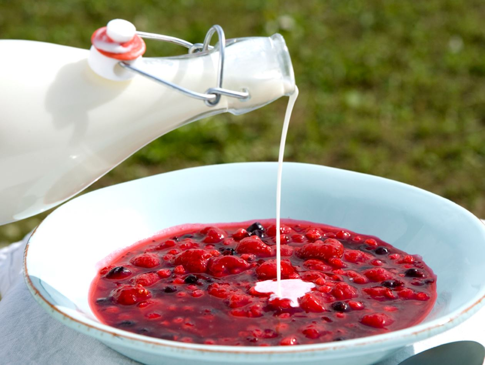

Denmark
Rodgrod Med Flode

Description
Red Berry Pudding with Cream, is the hallmark dessert of Denmark.
Ingredients
- 1 1/2 pounds red berries or fruit, such as red currants, black currants, raspberries, strawberries, rhubarb, or a combination
- 3 cups water
- 1 cup sugar
- 1/4 cup potato starch, or cornstarch, dissolved in 1/2 cup cold water
- 1 cup heavy cream
- 1 tablespoon vanilla sugar, for the whipped cream (optional)
Steps
- Gather the ingredients.
- Clean the fruit well. If using rhubarb, chop it into 1-inch pieces.
- Place the fruit into a nonreactive saucepan and cover with 3 cups water. Bring to a boil and reduce heat to medium-low and simmer until the fruit falls apart.
- Remove from heat and strain juice through a cheesecloth or a fine-meshed sieve. Discard the berry seeds.
- Return juice to heat, stir in sugar, and bring to a low boil.
- Reduce heat to medium and add the dissolved potato flour or cornstarch liquid to thicken. Stir the mixture constantly until it begins to gel to the consistency of heavy syrup.
- Remove from heat, pour into individual serving bowls, cover with cling wrap, and refrigerate for at least 2 hours and up to two days.
- Serve chilled with either plain or whipped cream sweetened with vanilla sugar.
- Enjoy.
Film Pairings